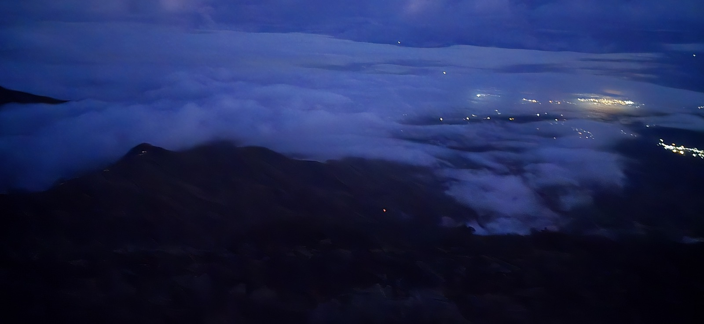
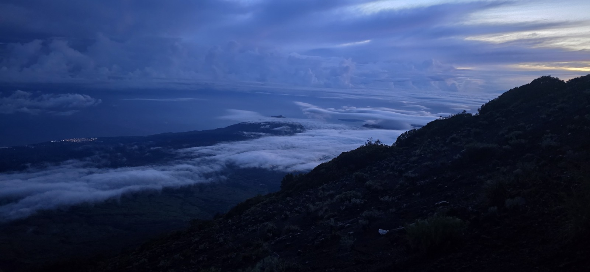
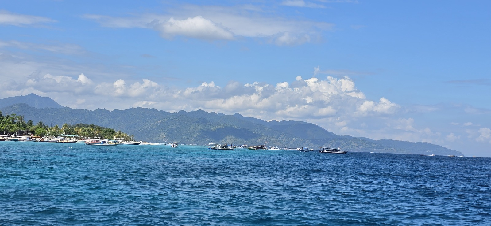
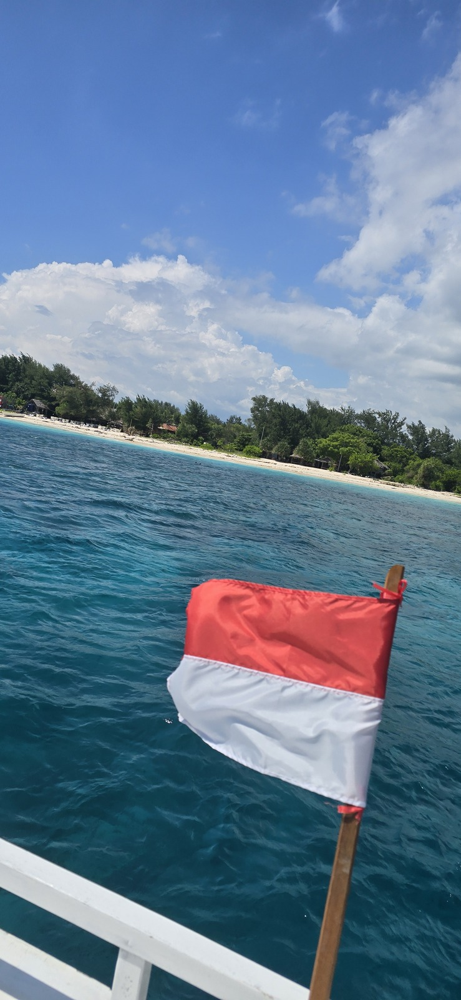
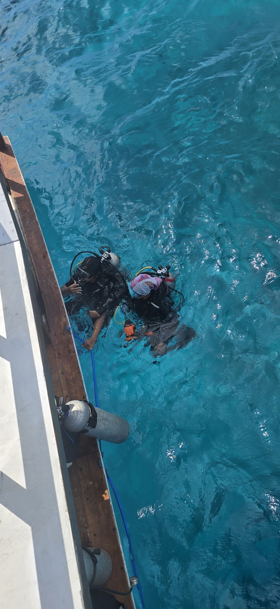
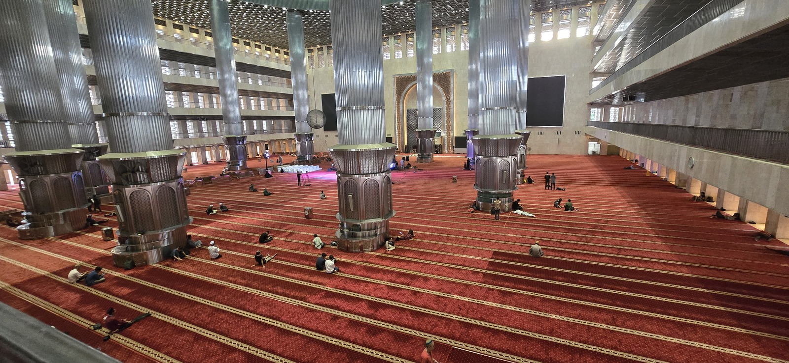
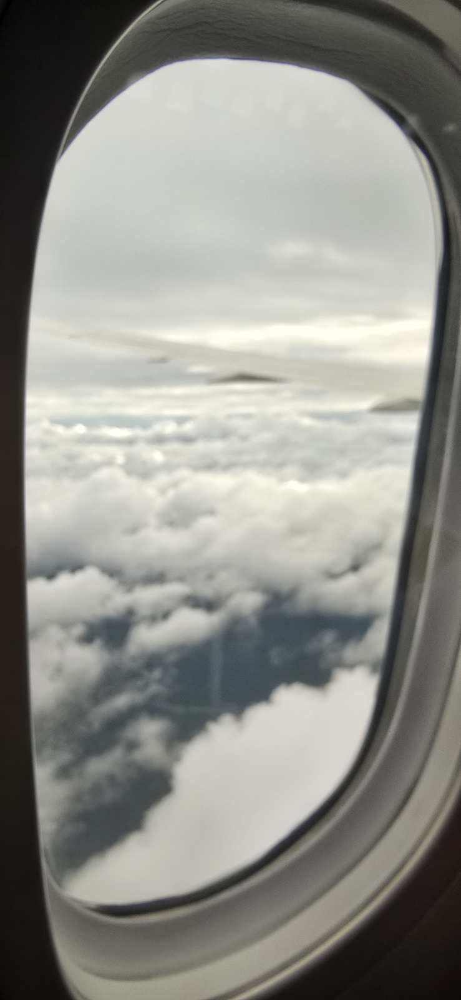

Горы до рассвета. Море. Глубина. Город.
Дорога домой. Поездка закончилась — фотографии остались.

Есть виды, которые камера сохраняет только частично. Остальное остаётся в памяти.

Море, острова и ощущение, что спешить сегодня вообще некуда.

Индонезия с воды: ветер, солнце и флаг над лодкой.

Там становится тихо. Остаются дыхание, глубина и несколько метров вокруг.

После моря — другой ритм. Пространство, люди, дорога и места, где хочется остановиться.

Самолёт набирает высоту, а поездка постепенно превращается в воспоминание.
Альхамдулиллях за эту дорогу, за увиденное и за то, что осталось в памяти после возвращения.